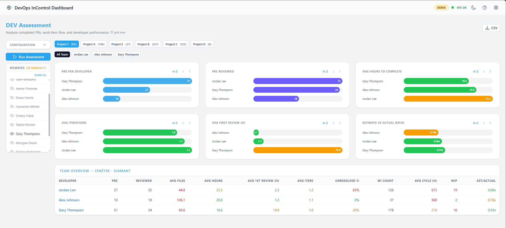

Developer Assessment
The Developer Assessment gives you insight into how your team is working. It analyses pull request activity, code reviews, and work item completion across a time period you choose.

Charts showing PR activity and code reviews per team member.
How to Use It
- Open Developer Assessment from the sidebar.
- Choose a time mode:
- Months — Select a range (1, 3, 6, or 12 months).
- Sprint — Select a specific project, team, and sprint.
- Optionally filter by specific projects or team members using the filters panel.
- The charts update automatically to show the results.
What the Charts Show
| Chart | Description |
|---|---|
| PRs per Developer | How many pull requests each person created in the selected period. |
| PRs Reviewed per Developer | How many pull requests each person reviewed. |
| Work Items Completed per Developer | How many work items (tasks, bugs, etc.) each person moved to Done. |
You can sort the charts alphabetically or by value (ascending/descending) using the sort buttons.
Developer Detail View
Click on a team member's name to see their individual metrics and trends over time.
Features
- Member filter — Expand the filter panel to include or exclude specific people.
- Project buttons — Click a project name to filter results to that project only.
- Select all / Deselect all — Quickly toggle the member filter.
Note
This screen analyses data from Azure DevOps. The more months you select, the longer the analysis may take.
Tip
Use the Developer Assessment as a conversation starter during retrospectives — not as a performance scorecard. Different roles produce different numbers.